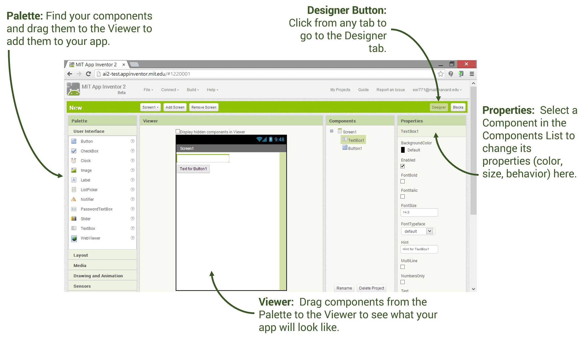
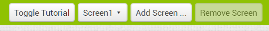
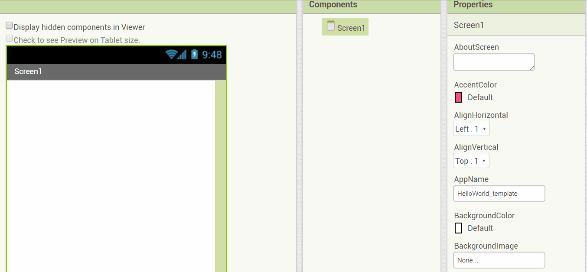
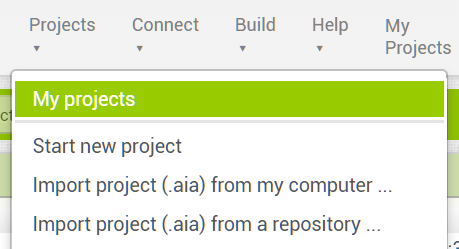
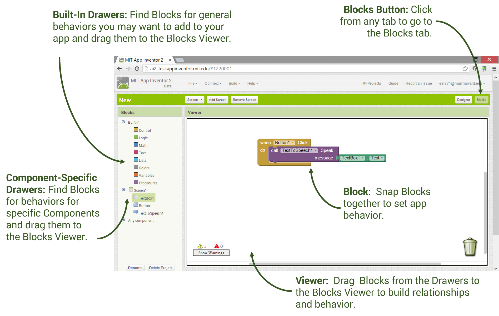
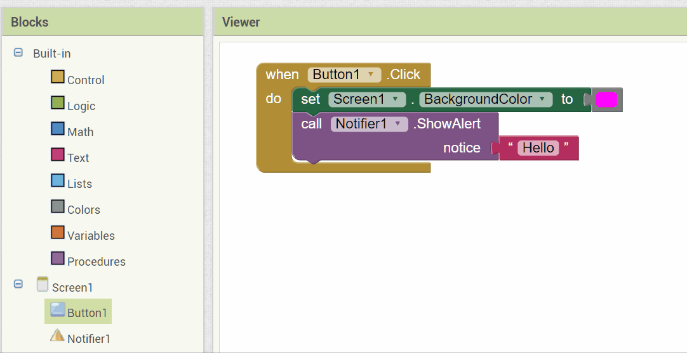

Welcome to App Inventor
Note that App Inventor is not supported on Internet Explorer browsers. We suggest using Chrome or Firefox.
Click on Designer Window below to follow the tutorial.
Designer Window

There is a Toggle Tutorial button in the green bar at the top that you can use to open and close this tutorial pane:

Try changing the background color of the Screen in the properties window!

My Projects

Connect Mobile Device
Let's connect your mobile device to your App Inventor Project.
Click here if you don't have a device and here if you don't have WiFi available.
1. Download Companion App
 MIT AI2 Companion. You need to install the MIT AI2 Companion only once, and then leave it on your phone or tablet for whenever you use App Inventor.
MIT AI2 Companion. You need to install the MIT AI2 Companion only once, and then leave it on your phone or tablet for whenever you use App Inventor.
If you can't use the Play Store click here.
2. Connect to the Companion

 Start up the AI Companion app on your mobile device and click on Scan the QR code (or enter the text code) by pointing your mobile device's camera to the computer screen to read the displayed QR code.
Start up the AI Companion app on your mobile device and click on Scan the QR code (or enter the text code) by pointing your mobile device's camera to the computer screen to read the displayed QR code.
If you have problems, make sure your mobile device and your computer are on the same WiFi or other network. If the app seems frozen, try Connect/Reset Connection and then try Connect/AI Companion again. See the Troubleshooting page or try another method of connecting your device such as USB or using the emulator.
Blocks Window
Click on the Blocks button at the top right to switch to the Blocks editor.

The Blocks editor is where you add the code to make your button and other UI components work! You can go back and forth between Designer and Blocks at any time in your project.
Change the code to choose a different background color. Double click where it says "Hello" and change it to say "Hello World!" instead.

Try your app! It should still be connected to your mobile device, but if it is not, do Connect/AI Companion (or reset if needed).